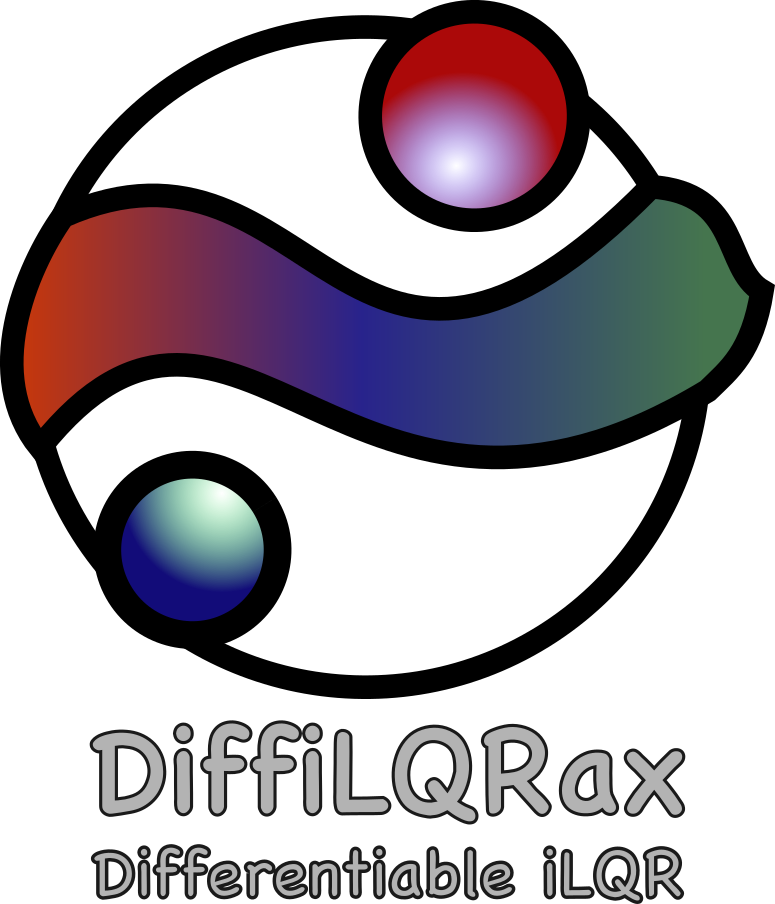
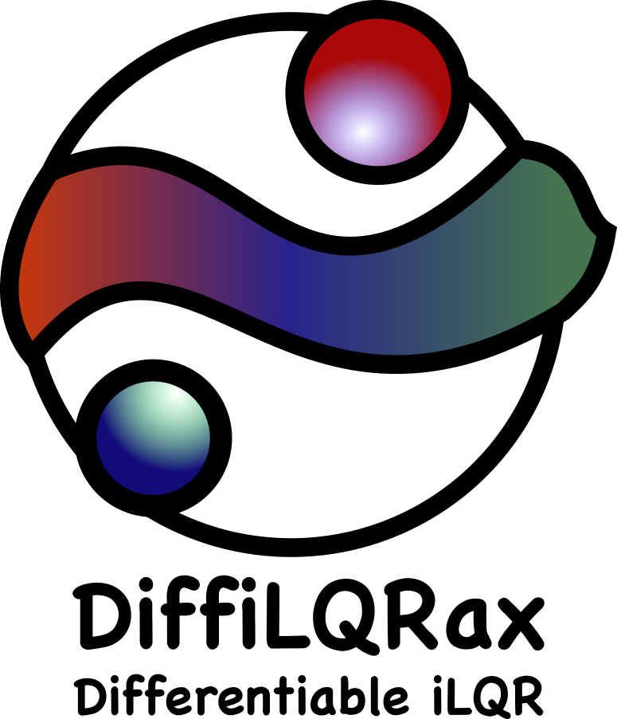
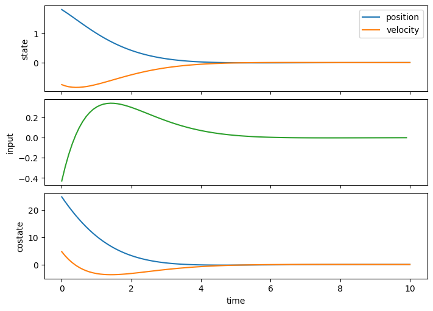
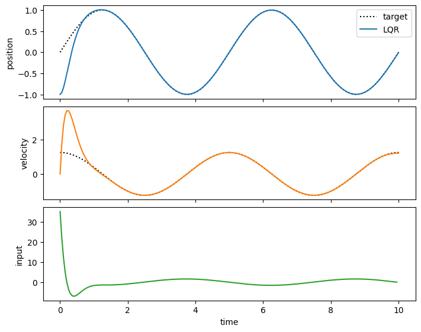
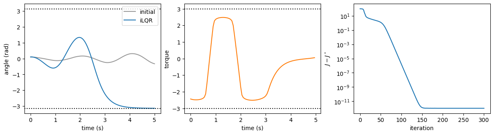
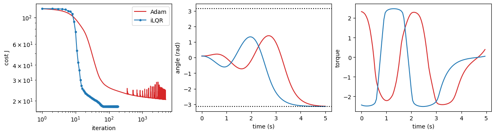
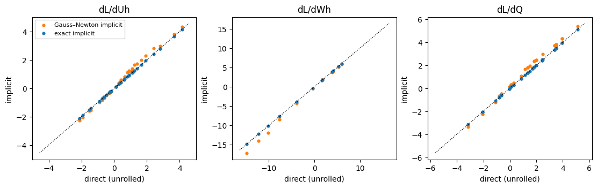
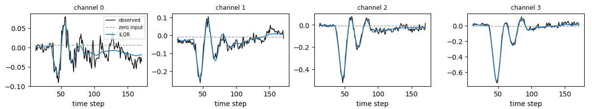

Welcome to DiffiLQRax!#
DiffiLQRax is an open source JAX library for LQR and iterative LQR (iLQR) optimal control. It provides:
sequential (Riccati) and parallel (associative-scan) solvers for LQR and iLQR,
adaptive regularisation and Armijo line search, with stopping based on the KKT conditions,
exact implicit gradients through every solver via
jax.grad, so a controller can be trained inside a larger model.
Please support the development of DiffiLQRax by starring or watching the project on GitHub.
Quick Examples#
Linear Quadratic Regulator (LQR)#


Iterative LQR (iLQR)#





Installation#
git clone git@github.com:ThomasMullen/diffilqrax.git
cd diffilqrax
pip install -e . # or: uv sync
See Getting started for optional extras, GPU notes and a first example.
Contents#
Acknowledgements#
This project has received funding from the European Union’s Horizon 2020 research and innovation programme under the Marie Skłodowska-Curie grant agreement #813457.